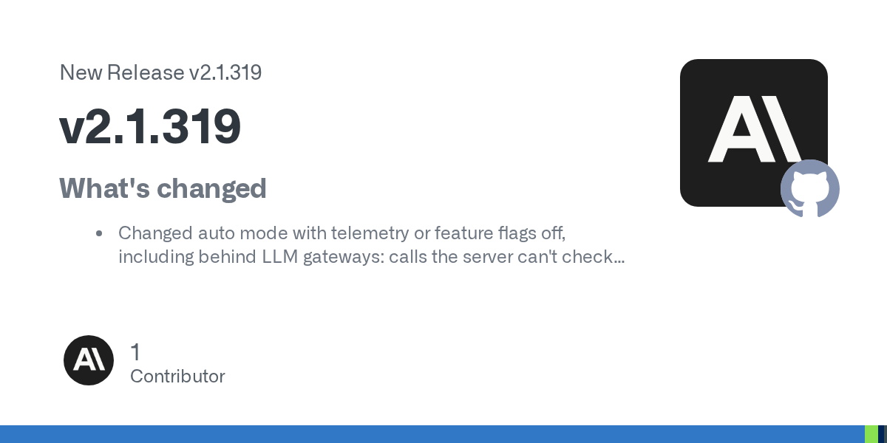
Anthropic官方Release
Claude Code接入后台MCP任务
来源: Anthropic官方Release · 2026-11-07 · 原文链接
Claude Code v2.1.319允许MCP服务器将工具调用作为任务运行，终端立即转入后台，完成后再通知模型；也提供等待任务完成的关闭选项。自动模式在部分遥测或功能开关关闭、服务端无法检查的情况下会询问或拒绝，不再默认退回内置分类器；Bedrock、Vertex和Foundry保持原规则。非交互运行若因没有安全检查而拒绝动作，文本和JSON输出现在返回退出码1。
Janet 锐评：
脚本没有做成事，却用成功状态结束，后面的定时任务就可能继续往下走。退出码修正比一条新提示更影响日常运行。后台任务则给长调用留了位置，完成通知仍是链条的一部分。
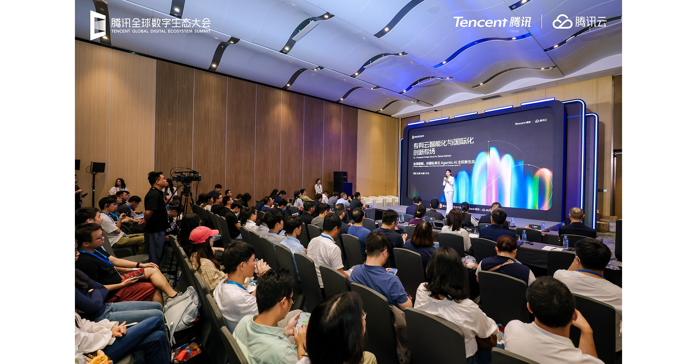
腾讯云本次发布配图／PR Newswire
腾讯云推出轻量私有AI部署方案
来源: 腾讯云公司新闻稿 · 2026-11-07 · 原文链接
腾讯云企业版公布Full-Stack Intelligent套件与Lite Deployment，覆盖算力存储网络、私有模型服务TokenHub、含隔离环境与身份控制的智能体运行层及应用层。厂商称完整云最小部署需八台服务器，AI专用方案最小三台，面向数据驻留和本地运行需求。这是产品架构与最低配置的公司公告，不能据此推断任意模型在三台机器上都能达到相同吞吐或成本。
Janet 锐评：
三台服务器这个数字很醒目，但企业实际采购还会遇到模型大小、并发人数和故障冗余。最小能安装的配置，与一整天稳定服务同事的配置，中间仍有一段容量规划。
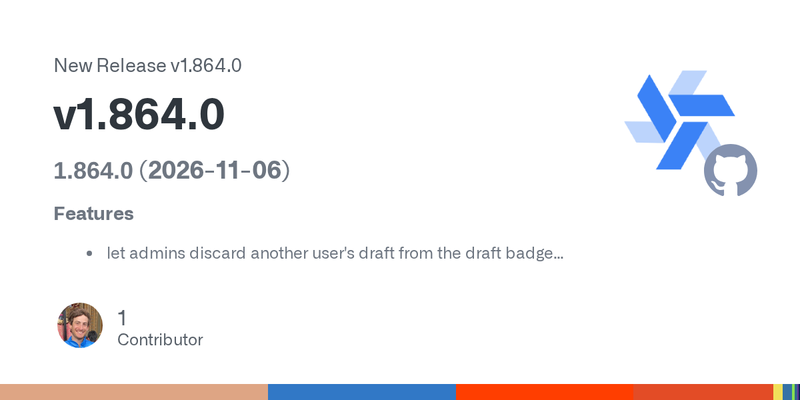
Windmill官方连续版本记录
Windmill给循环和并行分支加上限
来源: Windmill官方连续版本记录 · 2026-11-07 · 原文链接
Windmill当天发布v1.863.0至v1.864.1：为while循环增加最多迭代次数与最长时长，限制并行分支数量，并按标签和优先级有序接纳受并发限制的任务。后续版本加入工作节点过去24小时、最近100次及累计任务的失败率，以及管理员丢弃他人草稿的入口；最后一个补丁修正Ansible执行所需的Python依赖。
Janet 锐评：
自动任务越跑越多，问题常常出在等待与重试怎样累积。循环时长和并行上限给资源消耗一个可填写的边界，节点失败率则帮助区分某段任务坏了，还是某台执行机器总在出错。
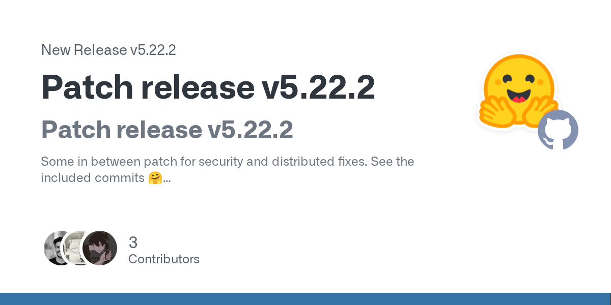
Hugging Face Transformers官方Release
Transformers加固模板沙箱控制
来源: Hugging Face Transformers官方Release · 2026-11-07 · 原文链接
Transformers v5.22.2是安全与分布式行为的维护补丁，公开变更包括加固Jinja模板沙箱，以及仅在NCCL后端设置device_id。公告未给出通用性能提升数字，也未在该发布说明中确认已经发生的攻击或泄漏。此条记录当天补丁，不将既有模型支持重新当作首发。
Janet 锐评：
聊天模板看起来只是格式，其实也有执行边界。加固沙箱值得维护者留意，但一个补丁标题不足以说明所有部署都遭遇了攻击；判断影响还得落到实际版本和模板来源。
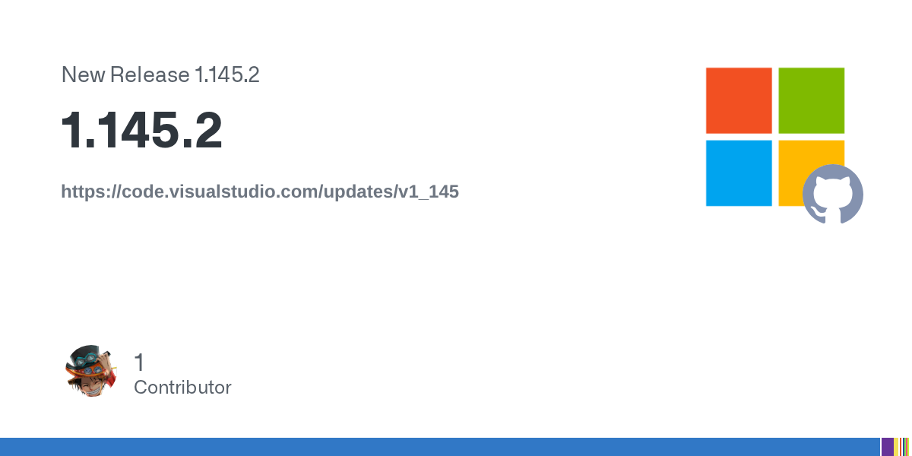
Microsoft官方Release与版本比较
VS Code推出智能体遥测维护补丁
来源: Microsoft官方Release与版本比较 · 2026-11-07 · 原文链接
VS Code 1.145.2于当天发布。从1.145.1到1.145.2的官方代码比较可见，此补丁调整Copilot智能体遥测转发：保留标准事件，丢弃仅受限通道的事件，并在同一用量事件同时收到两类副本时避免重复转发。它是1.145版本的维护更新，本期不将更早的主版本功能重新写成当天新增，也不据此宣称关闭了全部遥测。
Janet 锐评：
同一次调用产生几份记录、哪些字段走哪条通道，会影响使用统计和信息边界。补丁改的是转发规则；“少发某类数据”和“完全不发数据”之间，不能省掉那几个限定字。
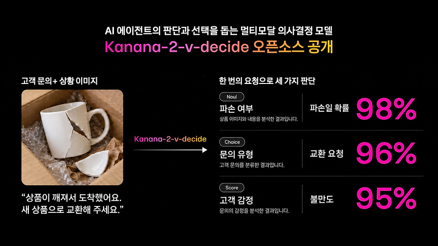
Kakao官方技术文章配图
Kanana开放图文选择模型权重
来源: Kakao官方模型卡、许可与技术文章 · 2026-11-07 · 原文链接
Kakao于11月6日01:42 UTC公开Kanana-2-v-decide-3b-2611权重，相关技术文章较早发布。模型总计3.67B参数，含0.49B视觉编码器和3.18B语言部分，上下文20,480 tokens，一次最多十张图。它根据图文状态，对候选答案、是非或有序分数给出概率，不生成聊天正文；概率依赖当次候选集合，不能直接当作跨任务统一置信度。采用Kanana Open License，API或云转售、面向第三方的设备内置及部分本地集成转售须另取商业许可。
Janet 锐评：
选项只有几个时，让模型专门给选项打分，比先写一段解释再从文字里猜决定更直接。代价是候选菜单本身也在塑造结果：漏掉正确选项，概率再整齐也救不了这个问题。产品接入还绕不过许可中的转售与设备条款，公开权重和无条件商业使用并不是同一件事。
Wizshot官方生成示例画面
Wizshot推出多参考图视频生成
来源: Wizstar官方产品页与公司新闻稿 · 2026-11-07 · 原文链接
Wizstar宣布自研参考图到视频模型Wizshot 1.0，产品页列出最多九张参考图、720p横竖屏、五至十五秒时长，以及每次最多生成四段视频，计费为每秒五积分。公司称其部分成本与质量优于所列竞品，属于厂商自报，未提供本期独立复测。登录免费方案可进入工具不等于无限免费生成；限时不限量活动另受订阅资格和活动条款限制。
Janet 锐评：
参考图多了，创作者能更明确地交代人物、服装和场景。九张输入是否互相打架、十五秒能否稳定保留细节，还要看实际样片；积分标价也得和账号权益一起读。
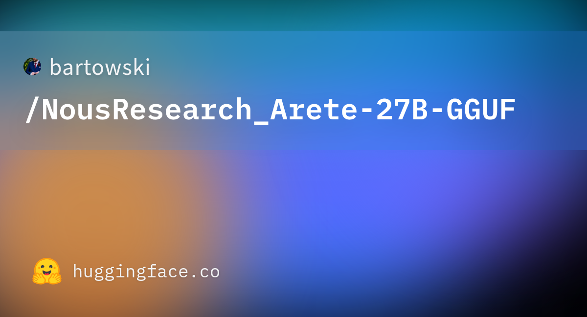
Hugging Face该量化仓库专属卡片
Arete27B加入独立GGUF量化版
来源: 独立维护者模型卡与仓库时间记录 · 2026-11-07 · 原文链接
bartowski于11月6日公开NousResearch_Arete-27B-GGUF，这是对既有Arete-27B的独立量化转换，不是Nous Research当天发布的新基础模型。模型卡列出Q4_K_M文件约17.20GB、BF16约53.81GB，使用llama.cpp b12174生成，提供图像投影文件并注明不支持推测解码。文件大小不含全部运行内存：视觉使用还需对应投影，推理也要额外缓存空间；未据此声称量化后性能无损。
Janet 锐评：
十几GB的下载量给本地试用提供了一个直观起点，却不是显存需求的完整答案。视觉投影、上下文缓存和实际运行器都要占位置，同一权重的不同转换也可能表现不同。
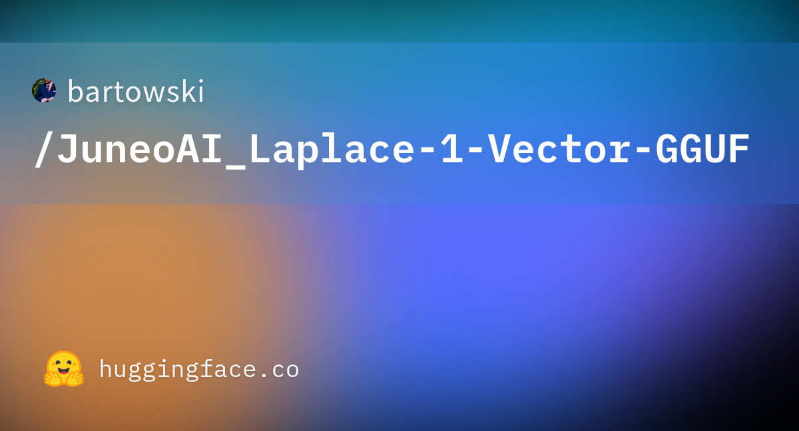
Hugging Face该转换仓库专属卡片
Laplace加入独立GGUF转换版
来源: 独立维护者模型卡与仓库时间记录 · 2026-11-07 · 原文链接
bartowski当天另公开JuneoAI_Laplace-1-Vector-GGUF，属于既有模型的独立GGUF量化转换，采用Apache 2.0许可标记。模型卡列出Q4_K_M约2.62GB、BF16约8.23GB，基于llama.cpp b12174生成；仓库的任务标记是文本生成，名称中的Vector不能据此解释为向量嵌入接口。卡片部分逐张量布局的测试来自另一个同架构模型，不能移写成Laplace自身的实测提升。
Janet 锐评：
小文件让一台普通机器更容易试起来，试用价值很具体。最容易顺手写错的反而是名字：看到Vector就归入嵌入模型，会从第一步便把接口和预期都接歪。
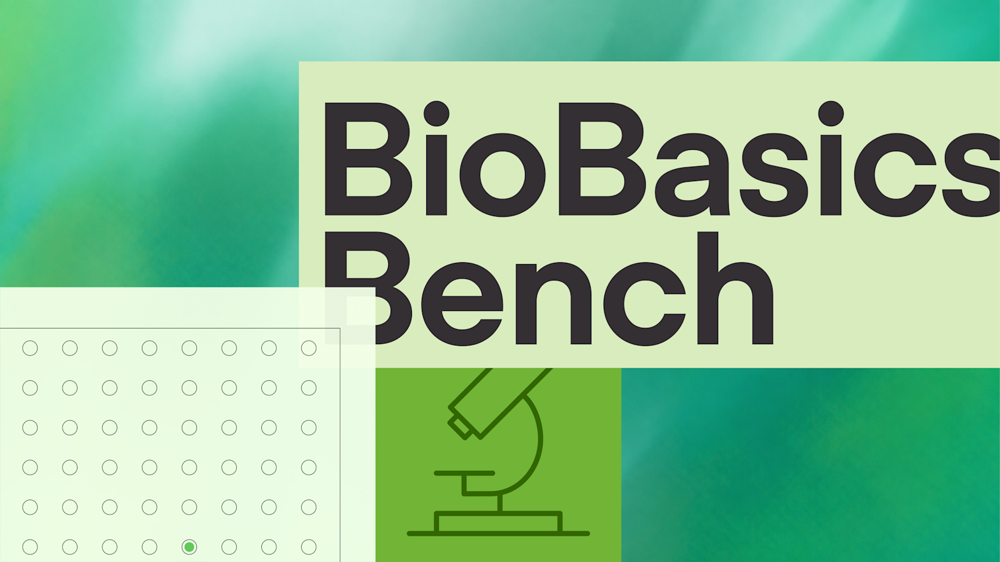
BioBasicsBench评测专属配图／OpenAI，非CellCog独立复测
CellCog用区间重读湿实验评分
来源: CellCog当日原始分析／OpenAI评测原文核验 · 2026-11-07 · 原文链接
CellCog当天首次发表BioBasicsBench分析，这是新分析，基础评测公告较早：OpenAI原始RSS标注11月6日00:00 UTC，早于本期窗口。分析重排七个模型在xhigh下的成绩与置信区间：GPT-6 Astra为66.7%，95%区间60.3%至73.1%；GPT-6.1 Sol为62.0%，区间55.6%至68.4%，作者提醒二者区间重叠，不能只凭4.7个百分点宣布明确胜出。底层评测含五类一百道湿实验任务，37种模型与推理设置各尝试五次，共18,500份结果，百分比是评分点而非全对题率。作者另核对识图、对照错误和约12%的菌落过计案例；这些数据来自OpenAI，CellCog没有独立复跑评测，且经营AI产品，利益关系已披露。
Janet 锐评：
实验室里，读出一条条带和知道这条条带能证明什么，是两回事。一个缺少对照的结果，最负责的回答可能就是暂时无法判断。原始材料比只问教科书知识更接近研究者的工作；比较两个高分时，区间和失败案例也应留在桌上，不能只剩排行榜第一名。
Allen AI ToyBlocks文章原图
Allen AI用积木世界测机器人规划
来源: Allen AI官方Hugging Face博客 · 2026-11-07 · 原文链接
Allen AI介绍ToyBlocks机器人学习环境：积木六面可贴图片或字母，任务要求翻转、观察遮挡面并操作，可随机改变积木尺寸和桌面高度。团队在Isaac Lab中结合强化学习、运动规划与任务规划批量生成演示，并用Molmo2高层规划器和ManiFlow低层策略作初步实验；可替换的理想模块用于区分规划和执行错误。结果仍暴露空间泛化困难，这是可控模拟环境，不能当作真实机器人普遍可靠的证明。
Janet 锐评：
字母藏在积木背面，机器人得先改变视角，再决定怎么放。这样的小游戏把“没看见”和“看见却摆不好”拆开了；错误能定位到哪一步，训练才有比继续堆演示更具体的方向。
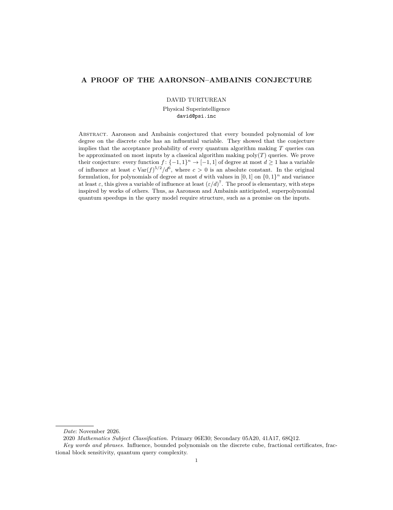
PSI本次公开论文首页，原始PDF渲染
PSI发布量子查询猜想证明文件
来源: PSI研究公告、公开论文与证明仓库 · 2026-11-07 · 原文链接
PSI宣布其研究系统得到Aaronson–Ambainis猜想证明，并公开论文与Lean形式化文件。公司称系统使用未公开的Anthropic模型，在第三天形成证明，后续完成改进并通过Lean检查；人类研究者David Turturean负责问题设定、系统运行、审读和研究责任，另有顾问参与检查。结论涉及查询模型中一般输入上的量子加速需要结构，不是“量子计算没有用途”。本期未独立重跑形式化验证，公司公告也不等于期刊同行评审已完成。
Janet 锐评：
一份数学证明能不能成立，与一段关于AI很聪明的讲述，是两个不同对象。公开论文和形式化文件，至少给其他人留下了逐步检查的材料；人类怎样限定问题、发现不妥并承担署名责任，也没有因此消失。Lean检查约束的是写进形式系统的命题和推导，不会自动替一切现实解读背书。
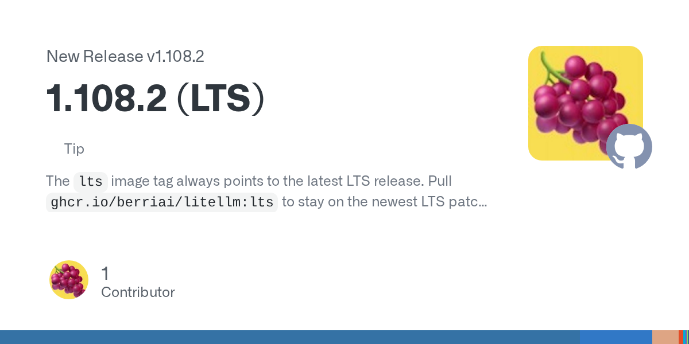
LiteLLM官方LTS发布记录
LiteLLM限制错误凭据与转录回显
来源: LiteLLM官方LTS发布记录 · 2026-11-07 · 原文链接
LiteLLM v1.108.2长期支持补丁修正两类边界：openai/部署的api_key为空时，不再将OPENAI_ADMIN_KEY误作Bearer token；音频转录失败时，不再把含转录内容的完整上游回复原样回给客户端与日志。版本还修正Bedrock服务档位和语音地区选择等行为。公告描述的是修复，不足以确认某家部署已发生真实泄漏，也未在此说明中公布统一风险等级。
Janet 锐评：
网关把许多服务接成同一个入口，错误也可能沿这个入口扩散。空凭据的后备选择与异常回显都属于容易被忽视的角落，恰好又可能接触比正常请求更多的信息。
今日核心预测
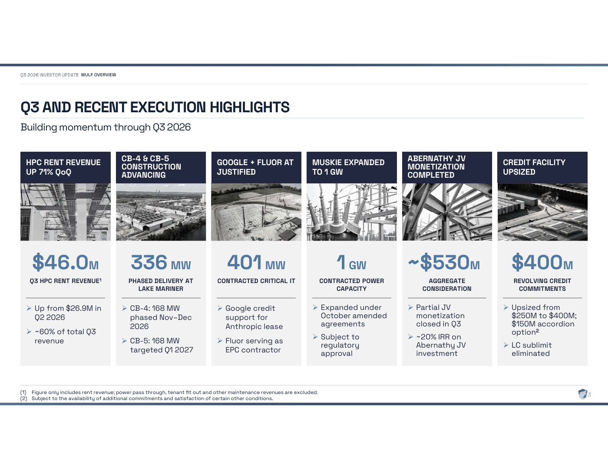
TeraWulf第三季度投资者演示第3页，含纯租金口径说明
TeraWulf机房收入占比升至八成
来源: TeraWulf官方季度财报与投资者演示 · 2026-11-07 · 原文链接
TeraWulf当天公布第三季度财报：总收入约7,620万美元，其中高性能计算租赁收入约6,300万美元，占83%。归属于公司的净利润约7.099亿美元，受认股权证公允价值变动等非现金因素影响；非GAAP调整后EBITDA仍为负1,280万美元。截至9月底Lake Mariner已有102MW关键IT容量产生收入，另336MW在建。配图的4,600万美元是较窄的纯租金口径，排除电力转付、租户扩建及维护收入，不能与6,300万美元混为一项。
Janet 锐评：
八成收入来自计算租赁，能说明这家公司经营重心的变化。七亿多美元净利润却不能直接读成机房赚到了同样多的现金：认股权证估值也会改写利润表。把出租容量、租金和经营指标放在一起，才看得到园区究竟运行到哪一步；在建的336MW还没有自动变成今天的收入。
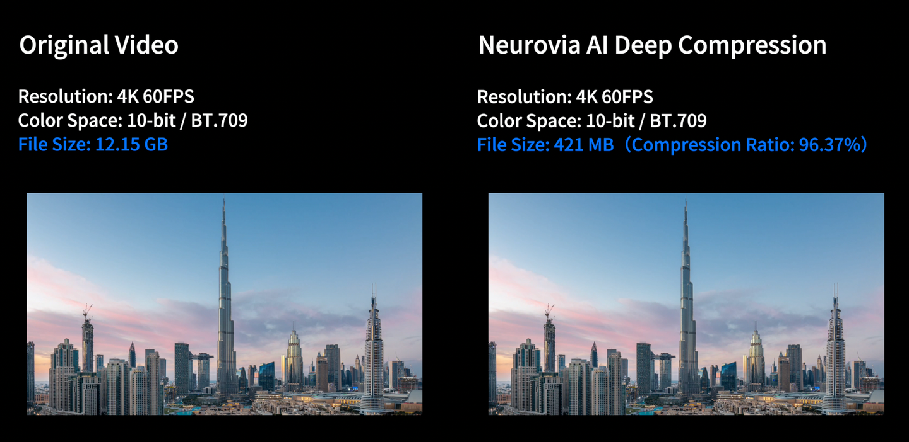
Robo.ai官网Neurovia视觉数据产品演示资料图，非财务业绩凭证
Robo.ai拟暂停新增浮价融资
来源: Robo.ai CEO官方股东信 · 2026-11-07 · 原文链接
Robo.ai CEO在新股东信中称，发信后一段时间内不打算新增与可变价格挂钩的股权融资，但没有给出明确期限，现有融资承诺仍会履行，不能理解为承诺永不增发或零稀释。信中自报6至9月收入超过2.8亿美元，并重述10月已公布的2026财年约6亿美元预期，后者不是已实现全年收入。旗下Neurovia AI的后续展示与园区建设仍有待推进，收入也不等于利润或正现金流。
Janet 锐评：
股东信里的“不打算”与合同里的固定禁发期限，约束程度不同。变价融资暂停的表态可以单独记录，旧协议是否继续带来股份变化，仍由已有条款决定，不能被一句新承诺盖过去。
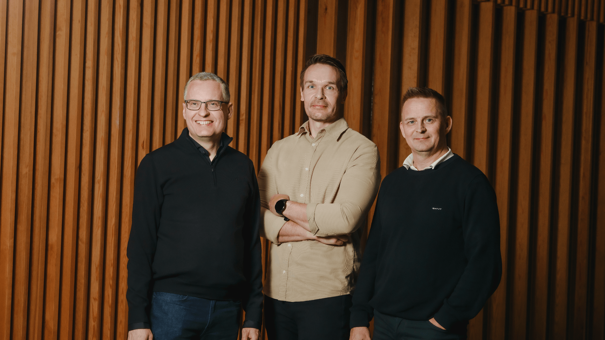
Tech.eu本次融资报道配图／Vensum Power
Vensum融资九百万欧元做电力转换
来源: Tech.eu原始报道与负责人引述 · 2026-11-07 · 原文链接
芬兰Vensum Power完成九百万欧元A轮，Tech.eu当天原始报道引述公司负责人，领投方包括Lifeline Ventures、Larsen & Toubro和Eviny，累计融资约1,520万欧元。公司以软件控制直流电力转换，先进入储能和电动车充电，AI数据中心是后续方向，并计划2027年通过合作工厂量产。这是减少转换损耗的设备路线，不是发电技术，也不能写成已在AI机房规模部署。
Janet 锐评：
从电网到设备，电经过几次转换，每一段损耗都会变成热。九百万欧元押在这条朴素的链上，比另造一个聊天入口更贴近电费；2027年量产计划距离稳定供货，仍有工程与制造要完成。